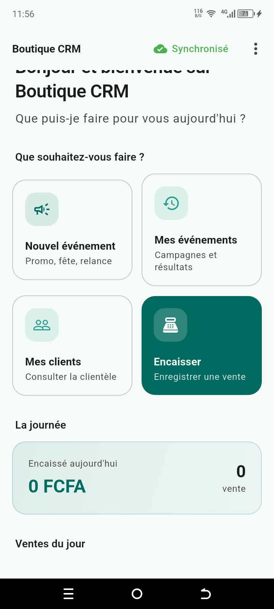
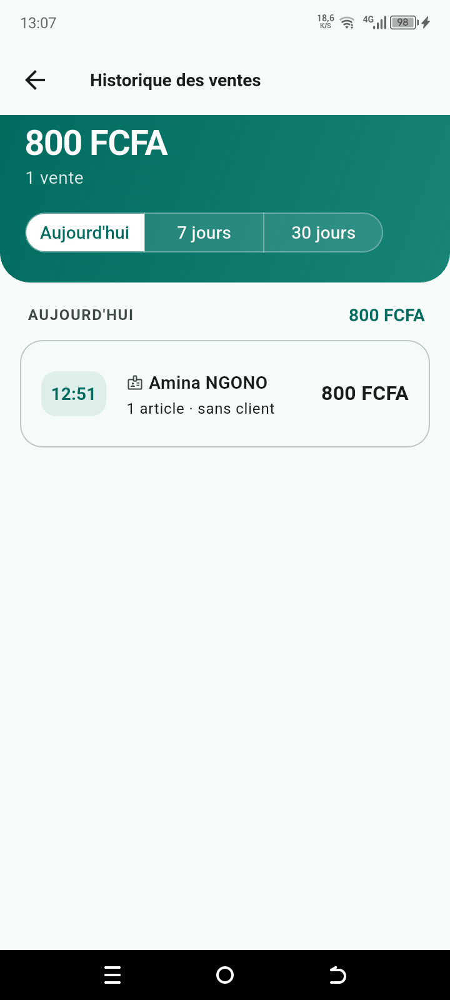
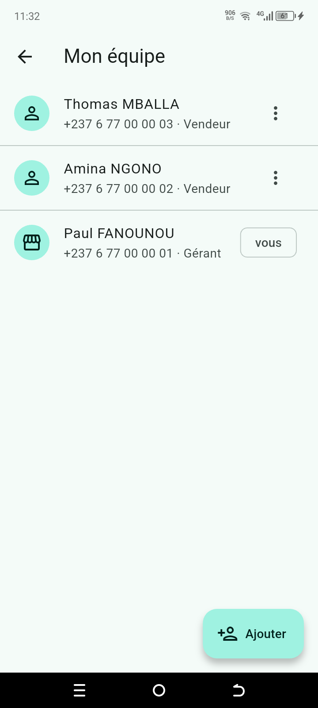

🏪
Boutique CRM
Plateforme de fidélisation pour commerces de détail
Une commerçante encaisse ses ventes sur son téléphone, constitue son fichier clients au fil des passages, et relance par SMS celles et ceux qui s'éloignent.
Toute l'application fonctionne sans connexion. Dans une boutique de Douala,
le réseau va et vient : une caisse qui afficherait « pas de connexion » au moment
d'encaisser serait abandonnée en une semaine. Les données sont écrites en SQLite
locale, et la synchronisation rattrape le retard quand le réseau revient.
Segmentation RFM automatique, détection de doublons, recherche tolérante aux fautes de frappe, gestion des rôles vendeur/gérante, calcul de la monnaie à rendre, traçabilité des encaissements par vendeuse.
20 300
lignes de code
113
tests automatisés
3
couches applicatives
FlutterDart
NestJSTypeScript
PostgreSQLSQLite
Docker



